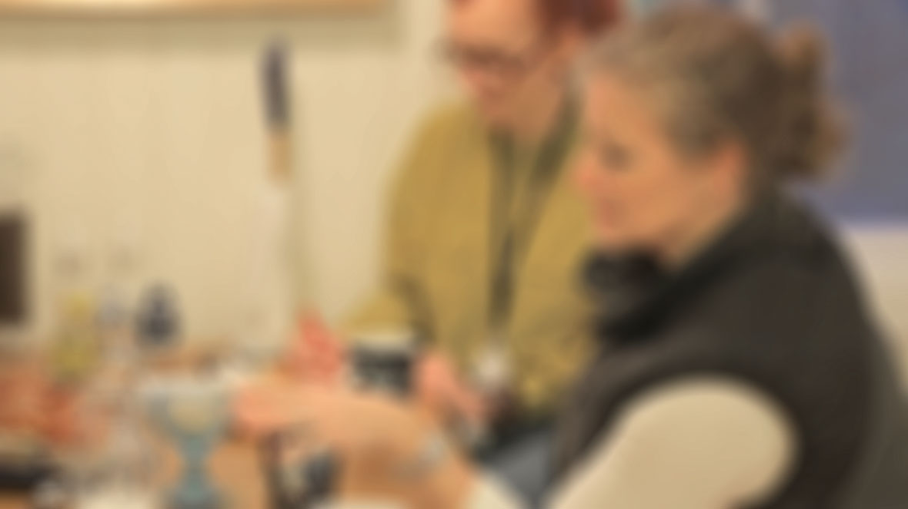
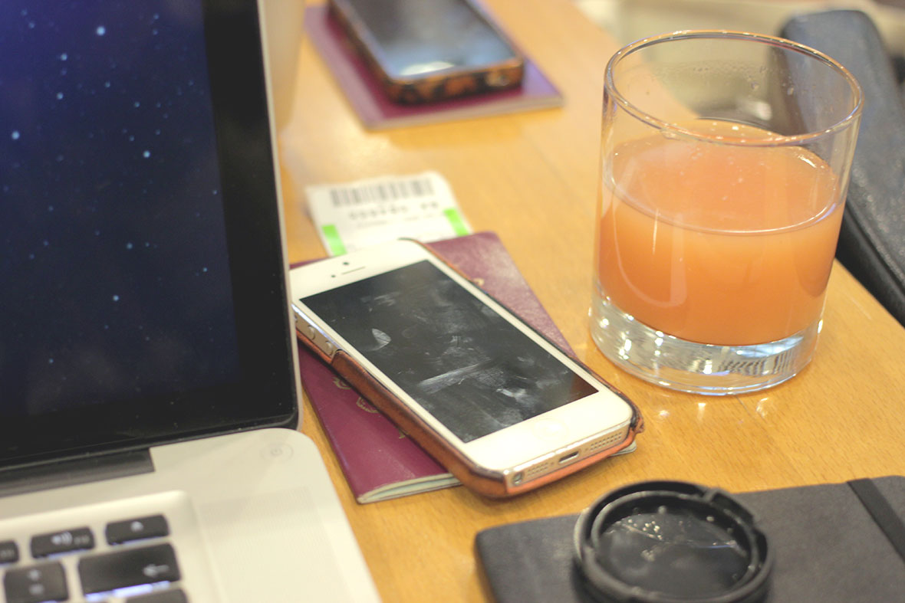
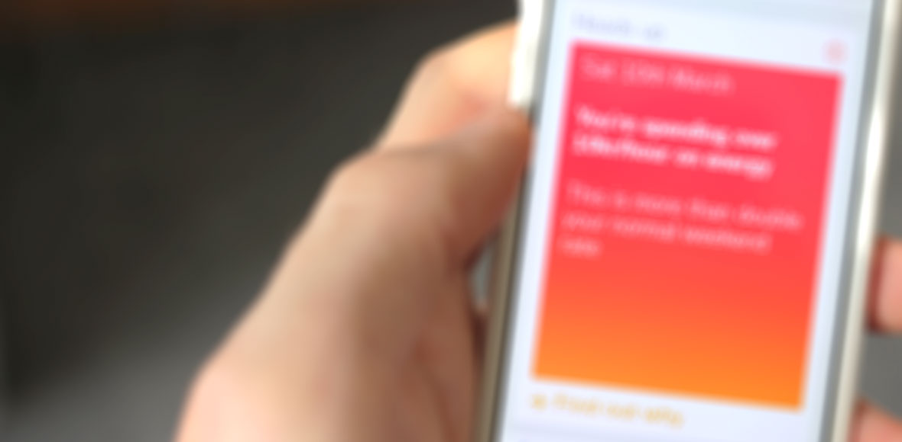

The energy sector is undergoing a massive shake-up as profits fall, regulation increases and the public putting them under more scrutiny than ever. This can't be addressed through PR or a glossy coat of paint, but through long-term cultural changes.
Wolff Olins worked with a large Scandinavian energy company to help them meet these challenges. To help them become more open — to listen to people and at the same time, transform from self-proclaimed dinosaur to digitally native organisation. As the lead designer on the team, I helped define an approach that would allow the transformation to continue long after the project finished.
There were three parts to the approach: A new process focused on listening, a pilot that tested it out, and products designed to improve experiences.
NB: due to the confidential nature of the work, this is a broad overview of the project, with some specifics deliberately avoided.
Process
An ambition of this scale can't be done over the course of one project, it needed to be self-sustaining. We developed a process that would serve as a new way of working for everyone in the business. Borrowing from human-centred design and agile principles, the process puts people at the heart of everything the business does, and ensures the experiences people have are always the best they can be.
Part of this included a field guide for how the new way of working. Together with a colleague, we literally wrote the book on organisational design. We also created an online tool for employees to use whilst following the process. It provides a central place for all the data to be collected and shared around the organisation.
Pilot
We knew we couldn't just launch a new way of working across a 30,000 employee company — we needed to start small. To test the process and gather some real data we launched a pilot in the winter of 2013. A small team of us from Wolff Olins spent a few weeks with the clients in Scandinavia, visiting customers and learning about their experiences and identifying ways to improve them.
Products
As well as validating our approach, the pilot identified three new products that would immediately improve customers' experiences, thereby helping the business in it's transformation.
I worked with two great developers to create working prototypes that allowed us to gather real feedback, and also helped our client demonstrate the ideas to the business.